Main Page
Classes
Class List
Class Hierarchy
Class Members
Graphical Class Hierarchy
Go to the textual class hierarchy
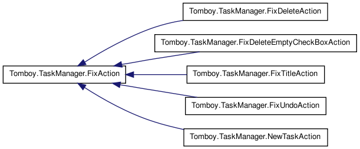
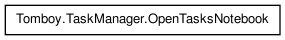
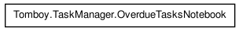
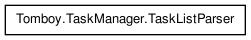
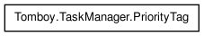
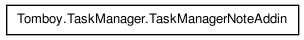
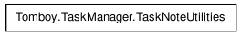
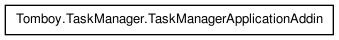
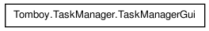
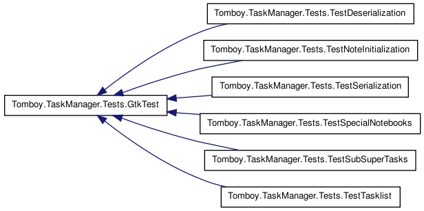
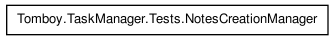
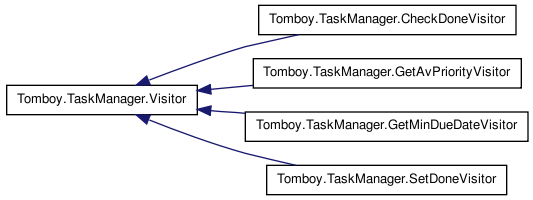
Generated on Fri May 28 00:23:08 2010 for TaskManager by
1.6.3

 1.6.3
1.6.3